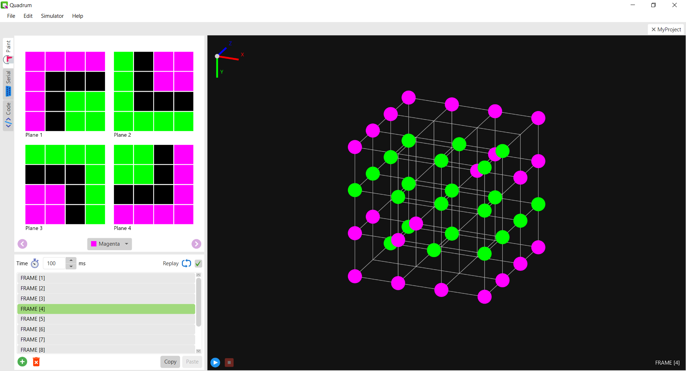

Software for LED-Cubes
LED-Cubes are fun DIY electronics projects that (depending on the cube size) can be really beginner-fiendly. Together with an awesome 3D-screen as an end result, you will learn how to solder, control a large number of LED:s, program microcontrollers and much more!
Quadrum is an open-source LED-Cube framework that helps you create and upload animations to the cube (the cube can have sizes between 2x2x2 and 8x8x8). Animations can be streamed in real-time from the editor to the LED-Cube with the help of an Arduino library, alternatively get uploaded to the Arduino through the use of the editor’s code generating function. This quick tutorial will explain in step-by-step how you can implement Quadrum on your cube.
GitHub
Visit Quadrum on GitHub! The GitHub repository contains the Quadrum source code together with license agreement and other information.
Non-Arduino Microcontrollers
Altough there currently is no library for microcontrollers other than Arduino, the Quadrum editor does not care whether the device on the other end of the serial bus is an Arduino or not as long as it responds in a similar way. If your microcontroller has support for C++, the porting of the library can be achieved by simply changing a few Arduino-specific functions inside QuadrumSerial.cpp and QuadrumCode.cpp respectively. You can download the Arduino library here.
License
Quadrum is released under the GNU General Public License which can be found in the LICENSE file. However, the third-party libraries utilized in the project such as jSerialComm are not necessarily distributed under the same license as Quadrum - to review license information regarding jSerialComm, navigate to thirdPartyLicenses/jSerialComm or visit https://github.com/Fazecast/jSerialComm.
All icons except for the Quadrum logo have been downloaded from https://icons8.com/.